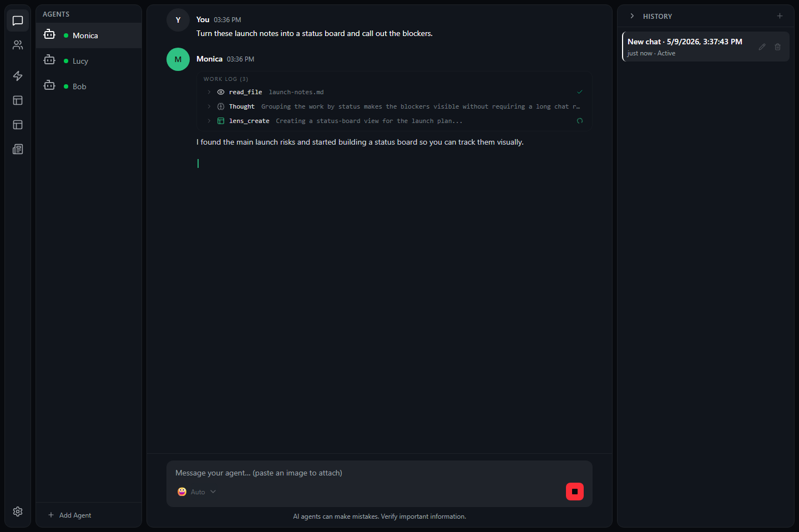

Say the outcome
Start with the result you want, such as a summary, plan, draft, or answer.
 CHAMBER
GitHub
CHAMBER
GitHub
Chat
Chat is where you tell a mind what you need and read its response. You can draft a message, paste images, stop long work, review tool activity, and change models when needed.
Type what you want the mind to do in the message box, then send it. Short messages are fine. More detail helps when the task has rules or a specific audience.
Start with the result you want, such as a summary, plan, draft, or answer.
Include details the mind needs, but do not include secrets or passwords.
The mind may answer quickly or show progress while it works.
A draft is text you have typed but not sent yet. Use drafts to collect your thoughts before asking the mind to act.
You can paste an image into chat when you want the mind to look at a screenshot, diagram, chart, or other visual detail.
If a mind is taking too long, going in the wrong direction, or working on something you no longer need, use the stop control.
Chamber formats replies so they are easier to scan. The mind may use headings, lists, links, code blocks, or tables depending on the answer.
Some tasks need the mind to use tools or record progress. Chamber may show panels so you can review what happened without mixing every detail into the main answer.

A model is the AI engine the mind uses to answer. Chamber may offer more than one. You can switch models when you need a different balance of speed, depth, or cost.
Find the model control near the chat or mind settings when available.
Use faster models for quick work and stronger models for harder reasoning.
Changing models affects future replies. It does not rewrite earlier messages.
Review tool requests before approving them, especially if they could change files, send data, or contact another service. Do not paste passwords, private keys, or other secrets into chat.